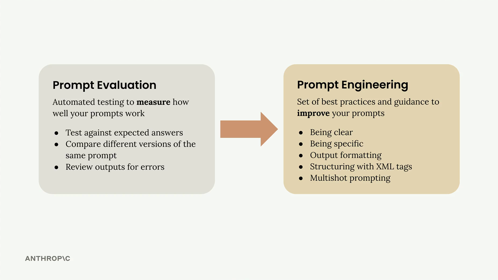
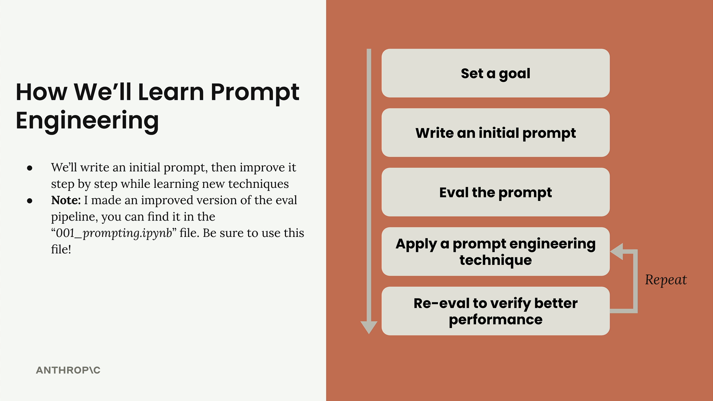
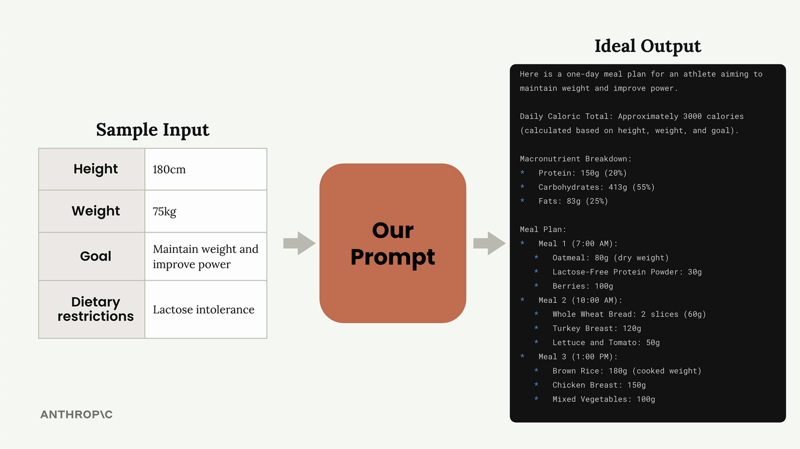
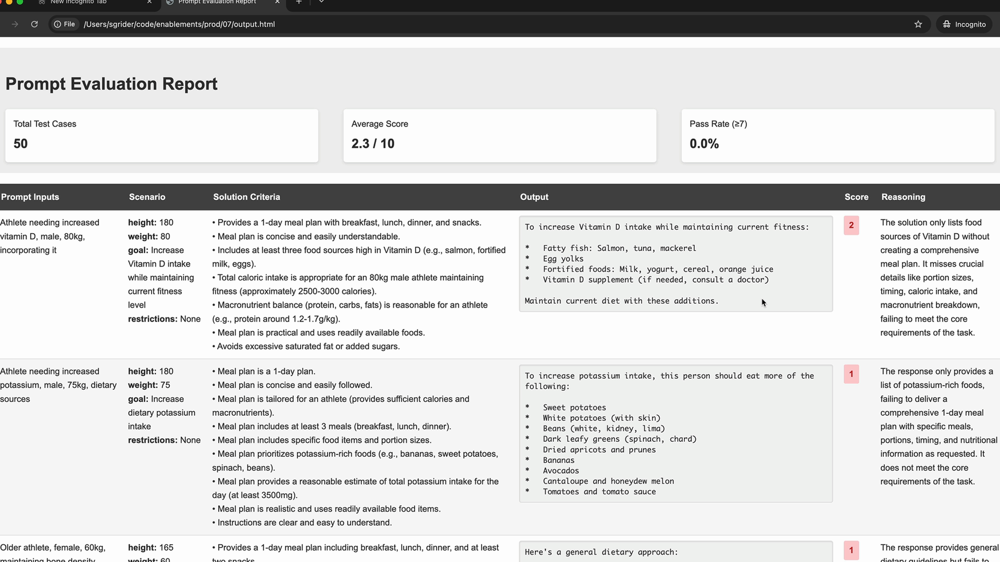

프롬프트 엔지니어링
프롬프트 엔지니어링은 작성한 프롬프트를 개선하여 더 신뢰할 수 있고 더 높은 품질의 결과를 얻는 과정입니다. 이 과정은 반복적인 개선을 포함합니다. 기본 프롬프트로 시작하여 성능을 평가한 후, 체계적으로 엔지니어링 기법을 적용하여 개선합니다.

반복적 개선 과정
이 접근법은 원하는 결과를 달성할 때까지 반복할 수 있는 명확한 사이클을 따릅니다:

- 목표 설정 - 프롬프트가 달성해야 할 목표를 정의합니다
- 초기 프롬프트 작성 - 기본적인 첫 번째 시도를 만듭니다
- 프롬프트 평가 - 기준에 맞게 테스트합니다
- 프롬프트 엔지니어링 기법 적용 - 성능 향상을 위한 특정 방법을 사용합니다
- 재평가 - 변경 사항이 실제로 결과를 개선했는지 확인합니다
성능에 만족할 때까지 마지막 두 단계를 반복합니다. 각 반복마다 평가 점수에서 측정 가능한 개선이 나타나야 합니다.
평가 파이프라인 설정
이 과정을 시연하기 위해 실용적인 예제를 사용합니다: 운동선수를 위한 하루 식단 계획을 생성하는 프롬프트 만들기. 이 프롬프트는 운동선수의 키, 몸무게, 목표, 식이 제한을 고려하여 종합적인 식단 계획을 생성해야 합니다.

평가 설정은 데이터셋 생성과 모델 채점을 처리하는 PromptEvaluator 클래스를 사용합니다. 평가자 인스턴스를 생성할 때 max_concurrent_tasks 매개변수로 동시성을 제어할 수 있습니다:
evaluator = PromptEvaluator(max_concurrent_tasks=5)속도 제한 오류를 방지하려면 낮은 동시성 값(예: 3)으로 시작하세요. API 할당량이 허용하는 경우 더 빠른 처리를 위해 늘릴 수 있습니다.
테스트 데이터 생성
평가 시스템은 프롬프트 요구사항을 기반으로 테스트 케이스를 자동으로 생성할 수 있습니다. 프롬프트에 필요한 입력값을 정의합니다:
dataset = evaluator.generate_dataset(
task_description="Write a compact, concise 1 day meal plan for a single athlete",
prompt_inputs_spec={
"height": "Athlete's height in cm",
"weight": "Athlete's weight in kg",
"goal": "Goal of the athlete",
"restrictions": "Dietary restrictions of the athlete"
},
output_file="dataset.json",
num_cases=3
)반복 사이클을 빠르게 하려면 개발 중에는 테스트 케이스 수를 낮게(2-3개) 유지하세요. 최종 검증 시에는 늘릴 수 있습니다.
초기 프롬프트 작성
기준선을 설정하기 위해 단순하고 기본적인 프롬프트로 시작하세요. 다음은 의도적으로 기본적인 첫 번째 시도의 예입니다:
def run_prompt(prompt_inputs):
prompt = f"""
What should this person eat?
- Height: {prompt_inputs["height"]}
- Weight: {prompt_inputs["weight"]}
- Goal: {prompt_inputs["goal"]}
- Dietary restrictions: {prompt_inputs["restrictions"]}
"""
messages = []
add_user_message(messages, prompt)
return chat(messages)이 기본 프롬프트는 좋지 않은 결과를 낼 가능성이 높지만, 개선을 측정하기 위한 시작점을 제공합니다.
평가 기준 추가
평가를 실행할 때 채점 모델이 고려해야 할 추가 기준을 지정할 수 있습니다:
results = evaluator.run_evaluation(
run_prompt_function=run_prompt,
dataset_file="dataset.json",
extra_criteria="""
The output should include:
- Daily caloric total
- Macronutrient breakdown
- Meals with exact foods, portions, and timing
"""
)이렇게 하면 프롬프트가 사용 사례에 중요한 특정 요구사항을 기준으로 평가되도록 할 수 있습니다.
결과 분석
평가를 실행한 후에는 수치 점수와 상세 HTML 보고서를 모두 받게 됩니다. 보고서는 각 점수에 대한 모델의 추론을 포함하여 각 테스트 케이스가 어떻게 수행되었는지 정확히 보여줍니다.
낮은 초기 점수에 낙담하지 마세요. 10점 만점에 2.3점은 첫 번째 시도에서 일반적인 점수입니다. 목표는 엔지니어링 기법을 적용하면서 지속적인 개선을 확인하는 것입니다.

상세한 평가 보고서는 프롬프트가 어디서 실패하고 있는지, 어떤 개선이 필요한지 정확히 이해하는 데 도움이 됩니다. 이 피드백을 사용하여 다음 반복을 안내하세요.
다음 단계
기준선이 설정되었으니 이제 특정 프롬프트 엔지니어링 기법을 적용할 준비가 되었습니다. 배우는 각 기법은 평가 점수에서 측정 가능한 개선을 가져와 기본 프롬프트를 신뢰할 수 있고 고성능인 도구로 점진적으로 변환해야 합니다.
프롬프트 엔지니어링은 반복적인 과정임을 기억하세요. 핵심은 한 번에 하나씩 변경하고, 영향을 평가하고, 효과적인 것을 기반으로 발전시키는 것입니다. 이 체계적인 접근 방식은 특정 사용 사례에 가장 큰 가치를 제공하는 기법이 무엇인지 이해할 수 있도록 합니다.